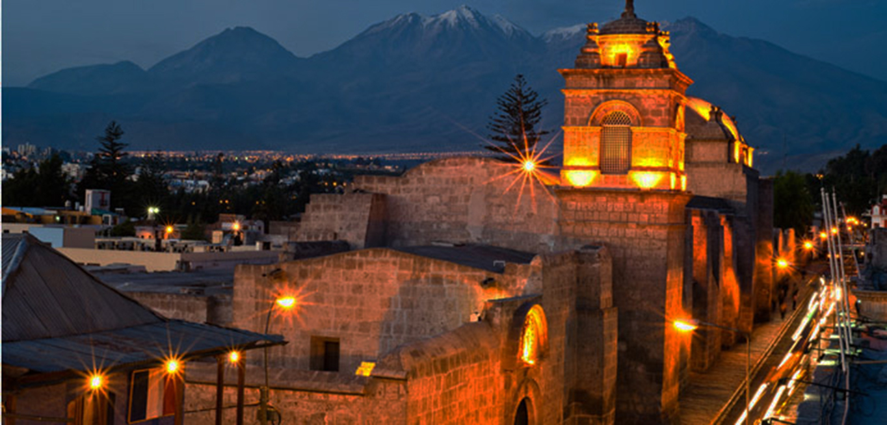
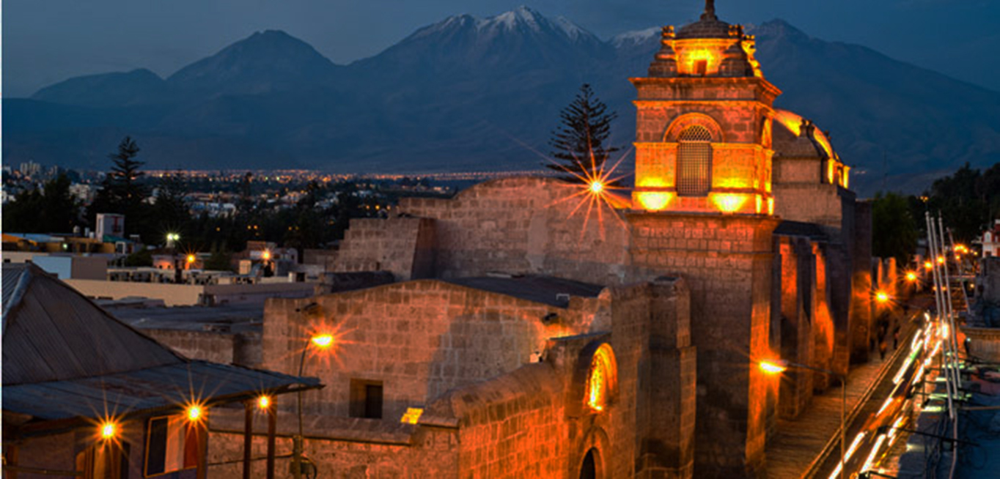

Produccion de Velas
La técnica de fabricación de velas se desarrolló en forma independiente en diversos lugares a lo largo de la historia.1 Se sabe que a partir del año 500 a. C. los romanos fabricaban velas de sebo por inmersión. En China se fabricaron velas hechas d e grasa de ballena durante la dinastía Qin (221-206 a. C.).2 En la India, la cera de canela hervida se usaba para fabricar velas para los templos.

Variedad de Velas


Las velas y la Edad Media
Tras la caída del Imperio romano, las revueltas sociales afectaron el comercio e hicieron que el aceite de oliva, el combustible más común para las de aceite, no estuviera disponible en gran parte de Europa. Por ello ganó popularidad el uso de velas. En cambio, en el norte de África y el Oriente Medio, la fabricación de velas permaneció relativamente desconocida debido a que no había escasez de aceite de oliva.